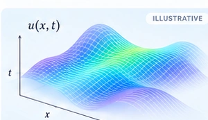
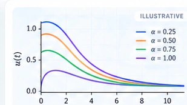
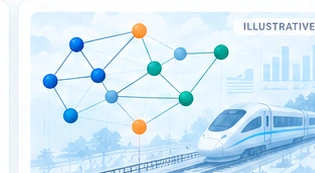
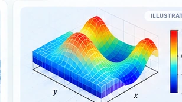

RESEARCH
Research Areas.
Applied mathematics research in fractional differential equations, numerical methods, scientific computing, and optimization.
18Publications4Research Areas
Journal ArticlesPeer-reviewed work
Ongoing ResearchNew problems & methods
Main Research Areas

Fractional PDEs & RBF Collocation
Meshfree MATLAB solvers, time-fractional equations, and error analysis.
MATLAB · RBF · PDEs

Fractional & q-Fractional Equations
Existence, uniqueness, and Hyers–Ulam stability using fixed-point techniques.
Fractional calculus · Stability

Optimization & Mathematical Modeling
Railway staffing optimization with Data Envelopment Analysis.
PDEA · DEAFrontier

Scientific Computing & Numerical Methods
Simulation, finite-difference techniques, and computational analysis.
Simulation · Numerical methods
Research Output
Research Tools & Technologies
MATLABMathematicaPythonJuliaLaTeXAbaqusDEAFrontier
Visuals are illustrative; consult the project descriptions and publications for verified methods and results.